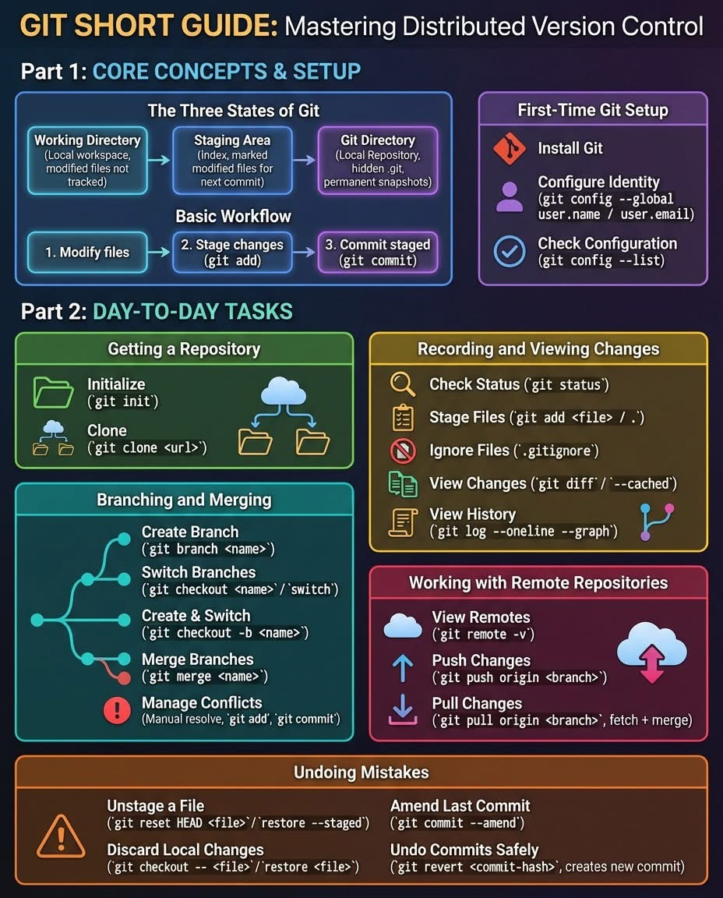
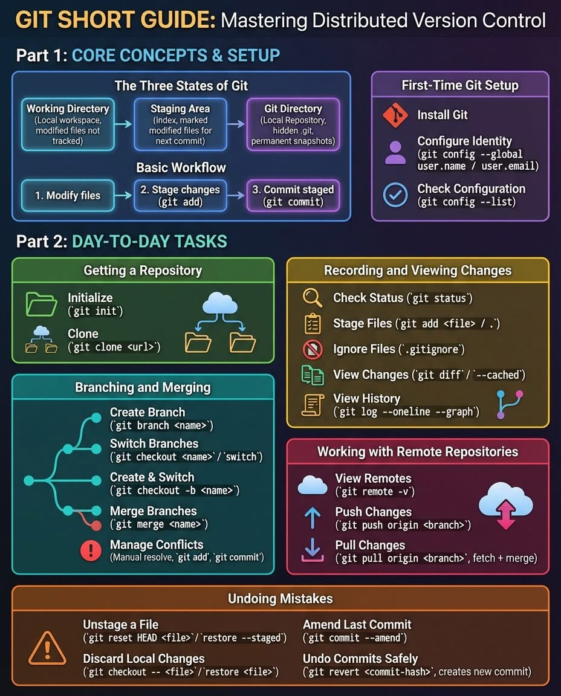

GitHub & Command Line
This page highlights my GitHub workflow and command-line usage, demonstrating version control practices and development tooling.
Computer Science · Software Development · Systems Engineering
This page highlights my GitHub workflow and command-line usage, demonstrating version control practices and development tooling.
